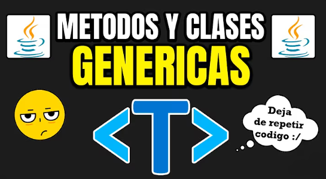

Las clases parametrizadas o tipos genéricos permiten
definir clases y métodos que pueden trabajar con distintos tipos de datos sin
necesidad de duplicar código. Son muy útiles para crear estructuras reutilizables.
public class Caja{ private T contenido; public void guardar(T valor) { contenido = valor; } public T obtener() { return contenido; } } // Uso: Caja c1 = new Caja<>(); c1.guardar("Hola"); Caja c2 = new Caja<>(); c2.guardar(123);